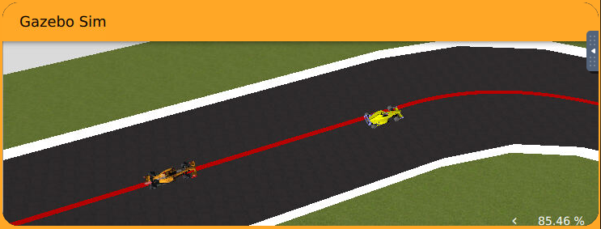
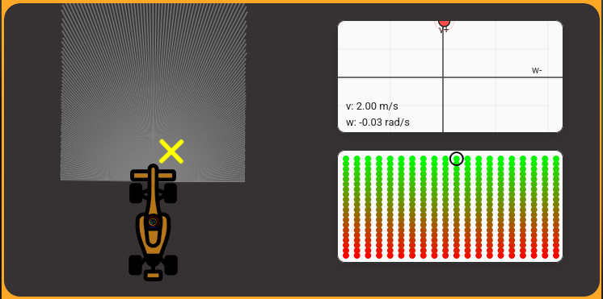

Nuevo ejercicio: Dynamic Window Approach
Durante esta semana se me planteó la creación de un nuevo ejercicio para Robotics Academy Premium .
El ejercicio recibe el nombre de Dynamic Window Approach (DWA) y está basado en el mismo escenario utilizado por el ejercicio Obstacle Avoidance. Aunque ambos comparten entorno y objetivo general, se plantean como ejercicios independientes ya que emplean algoritmos de navegación completamente distintos.

¿Qué es Dynamic Window Approach?
Dynamic Window Approach es un algoritmo de navegación local ampliamente utilizado en robótica móvil. Su objetivo es seleccionar en cada instante las velocidades lineales y angulares que permiten avanzar hacia el objetivo evitando colisiones.
A diferencia del ejercicio Obstacle Avoidance, donde la navegación se realiza mediante campos de fuerzas atractivas y repulsivas, DWA trabaja directamente sobre el espacio de velocidades del robot.
El algoritmo genera un conjunto de velocidades alcanzables teniendo en cuenta las limitaciones dinámicas del robot y evalúa cada una mediante una función de coste.
Score(v,w) = α · Heading(v,w) + β · Clearance(v,w) + γ · Velocity(v,w)
donde:
- Heading: favorece trayectorias orientadas hacia el objetivo.
- Clearance: penaliza trayectorias cercanas a obstáculos.
- Velocity: favorece velocidades elevadas.
La combinación de estos términos permite elegir el mejor movimiento posible en cada iteración.
Nuevos visores para el ejercicio
Como parte del desarrollo del ejercicio se implementaron nuevos visores específicos para facilitar la comprensión del algoritmo.

El primero de ellos representa la denominada ventana dinámica, mostrando gráficamente todas las combinaciones de velocidad lineal y angular que el robot puede alcanzar en el siguiente instante de tiempo.
El segundo visor utiliza un heatmap para representar la evaluación de todas las velocidades candidatas. Cada punto corresponde a una posible acción del robot y el color indica la puntuación obtenida tras aplicar la función de coste.
Gracias a esta representación es posible identificar visualmente cuál es la mejor acción disponible y cuál será finalmente seleccionada por el algoritmo.
Primer prototipo
Durante esta semana se desarrolló una primera versión funcional de estos visores. Aunque el ejercicio todavía no cuenta con toda la lógica implementada, los paneles de visualización ya permiten observar el funcionamiento básico del algoritmo y servirán como herramienta de depuración durante el desarrollo.
Conclusión
El desarrollo del ejercicio Dynamic Window Approach supone la creación de una nueva práctica para Robotics Academy Premium basada en técnicas de navegación local ampliamente utilizadas en robótica. Durante esta primera fase se ha definido la estructura del ejercicio y se han implementado los primeros visores que permitirán comprender visualmente cómo se toman las decisiones dentro del algoritmo DWA.